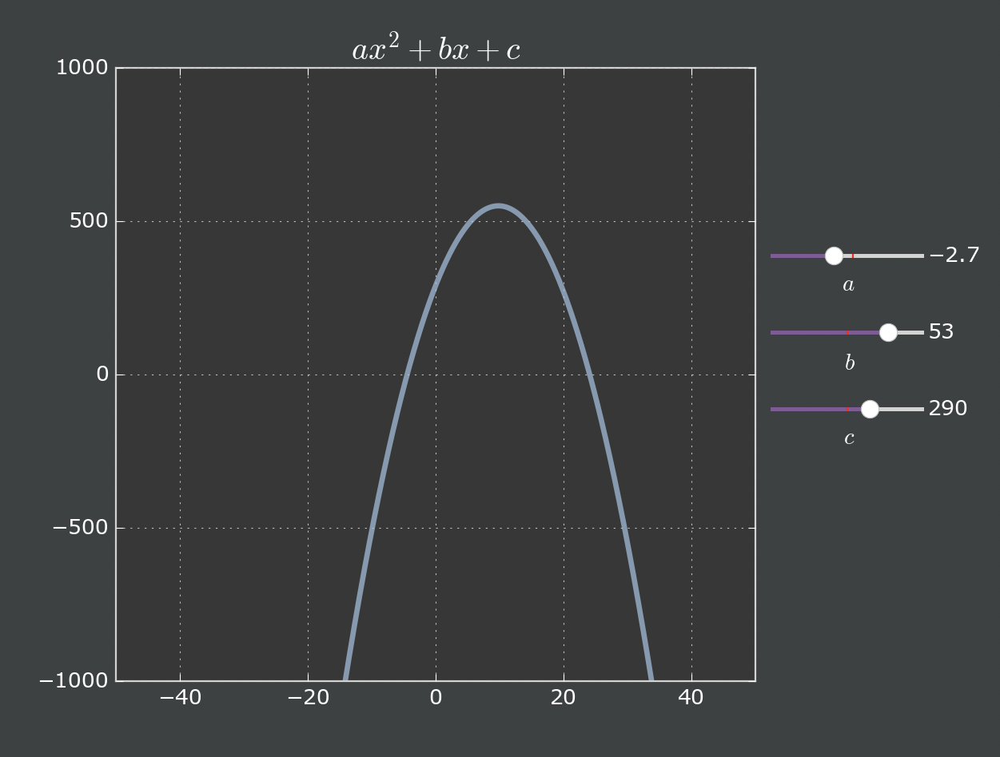

Nueral Network
I'm currently teaching myself Python by trying to build a nueral network from scratch (I know there are libraries for this that are surely more efficient than anything I can write). I was inspired by watching Sebastian Lague's youtube video where he builds a nueral network to classify hand drawn images. That channel is great and I highly recommend checking it out!
While the video explains ML concepts in a very accessible way, it does leave out some of the coding details. The idea of this project is to recreate the program from the video in Python. My main goals are to:
- Learn Python better and become familiar with the data science libraries available.
- Understand the machine learning algorithms and techniques while blackboxing as little as possible.
- Figure out how to make nice graphics in Python and use them to explain how well the neural network is performing.
Here I will catalogue my journey, all code can be found on GitHub.
Day 2
The next day went far more smoothly now that I had the graphing utility functioning properly. I realized that I need to navigate to the virtual environment and open VSCode from there every time, unfortunately.
In any case, I was very quickly able to get some code to produce a general parabola ax2+bx+c. I wanted to add this interactive plot to my HTML page but after a bit of googling I think I may need to learn some JavaScript and how back ends work. I'll attempt this soon.
The next goal was to make the plot look nice. I spent a bit of time making style changes in-line to get a pretty decent looking graph. Then I learned about making a Matplotlib style sheet. This cleaned up my code quite a bit and I was able to make a nicer looking graph.
Now that I could make a basic graph that looks decent, it was time to start generating some random data. My objective was to make a scatter plot with randomly generated data and have some region of the data be "good" and another region be "bad". Then I wanted to code a basic network that will determine if the randomly generated points are good or bad based on their (x,y) position. The beginning network would plug a point into the equations w11x+w21y = o1 w12x+w22y = o2
and if o1 ≥ o2 the point is good, otherwise it is bad. The weights would eventually be updated based on how well the network classified the training data.
The
Day 1
I'm very interested in data visualization though I've never used Python for anything, let alone the data science libraries. I decided to start quite small. My goal was to produce a nice looking graph for a general quadratic ax2+bx+c using Matplotlib and NumPy.
Apparently I don't know how to use VSCode because I immediately encountered an error—ModuleNotFoundError: No module named 'Matplotlib'—which turns out to be a common issue. This was not all bad, though, because I learned about setting up a virtual environment. Most of the advice online said that Matplotlib must not be installed on the virtual environment that VSCode was using. This was not the case though. In fact, VSCode had no problem running the code if 'Run in Terminal' was selected. For some reason that I still don't understand, navigating to my file in terminal and opening VSCode from terminal by typing code fixed the issue.
I spent a long time trying to resolve the error and at various points gave up and wrote some code instead. I made some progres but kept going back to the error. Overall, slow start but I guess that is to be expected.